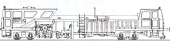

Krümelbahn
Krümelbahn
Plasser Duomatic 07-32
 Allgemeine Informationen
Allgemeine Informationen- Literaturhinweise
- Industriemodelle/Bausätze
- Baubeschreibung
- Gleisstopfexpress 09-3X
Allgemeine Informationen
Diese Gleis-Nivellier-Stopfmaschine "Plasser Duomatic 07-32" der Firma Plasser&Theurer wird von der DB zur Unterhaltung ihrer Gleisanlagen eingesetzt.Literaturhinweise
- Modellbahn-Kurier 3
Betrieb - Versorgung - Infrastruktur
Eisenbahn-Kurier, Best.Nr.1703
- Miba 9/00 (Seite 34f.) Fahrend stopfen - Conrad-Gleisstopfmaschine mit sb-Motorsatz
| Links |
|---|

Industriemodelle/Bausätze
| Hersteller | Epoche | H0 | TT | N | Bemerkungen |
|---|---|---|---|---|---|
| Liliput | IV | 136110 (F) | motorisiert | ||
| 136100 (F) 136101 (F) 136102 (F) 136104 (F) 136105 (F) |
motorisiert | ||||
| Conrad | IV / V | 218583 (F) 212759 (B) |
unmotorisiert | ||
| V | 241374 (F) | motorisiert | |||
| 218432 | Beschriftungssatz |
Baubeschreibung
in Betrieb seit: 12.1992Umfangreiche Beschreibungen zur Motorisierung dieses Fahrzeuges sind erschienen bei:
- Kossak, Willy Das große Praxis-Handbuch für Hobby-Eisenbahner
Teil 4. Kap.14.1.18
Interest Verlag, Kissingen - Der Modelleisenbahner 5/92 (Seite 42 und 43)
- Eisenbahn-Kurier 8/00 (Seite 112ff.) Antriebe für Gleisstopfmaschinen
Von der Modellbahnindustrie werden auch Motorisierungsbausätze angeboten:
- SB-Modellbau: Best.Nr. 25029
- Klunker, Gröditz: Best.Nr. unbekannt
Gleisstopfexpress 09-3X
| Hersteller | Epoche | H0 | TT | N | Bemerkungen |
|---|---|---|---|---|---|
| Kibri | IV | B-16050 (B) | unmotorisiert |
(Bau)Beschreibungen zu diesem Fahrzeuges sind erschienen bei:
- Miba 10/00 (Seite 30f.) Der Stopfexpress - Gleisstopfmaschine 09-3X als H0-Bausatz
- Eisenbahn-Kurier 10/00 (Seite 118f.) Der Gleisstopfexpress 09-3X
- Eisenbahn-Magazin 10/00 (Seite 120f.) Plasser & Theurer Stopfexpress
- Eisenbahn-Journal 1/01 (Seite 90f.) Ein Antrieb für Kibris Gleisstopf-Maschine
- Eisenbahn-Kurier 3/01 (Seite 96f.) Ein Antrieb für den Gleisstopfexpress
- Miba 3/01 (Seite 88f.) Mit Action übers Gleis - Kibris Stopfexpress von mbs motorisiert
- Miba 5/12 (Seite 76f.) Im Expressgang - Die Gleisstopfmaschine 09-3X in Vorbild und Modell